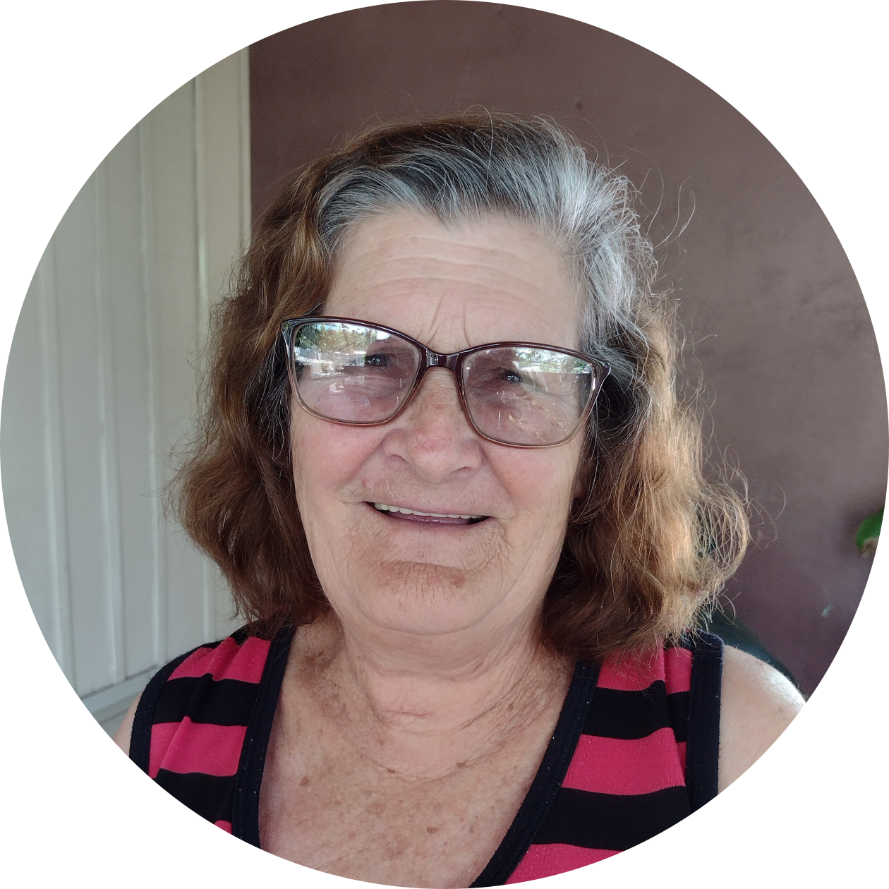
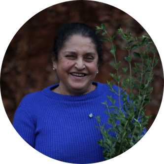
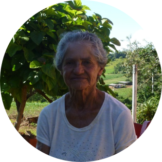
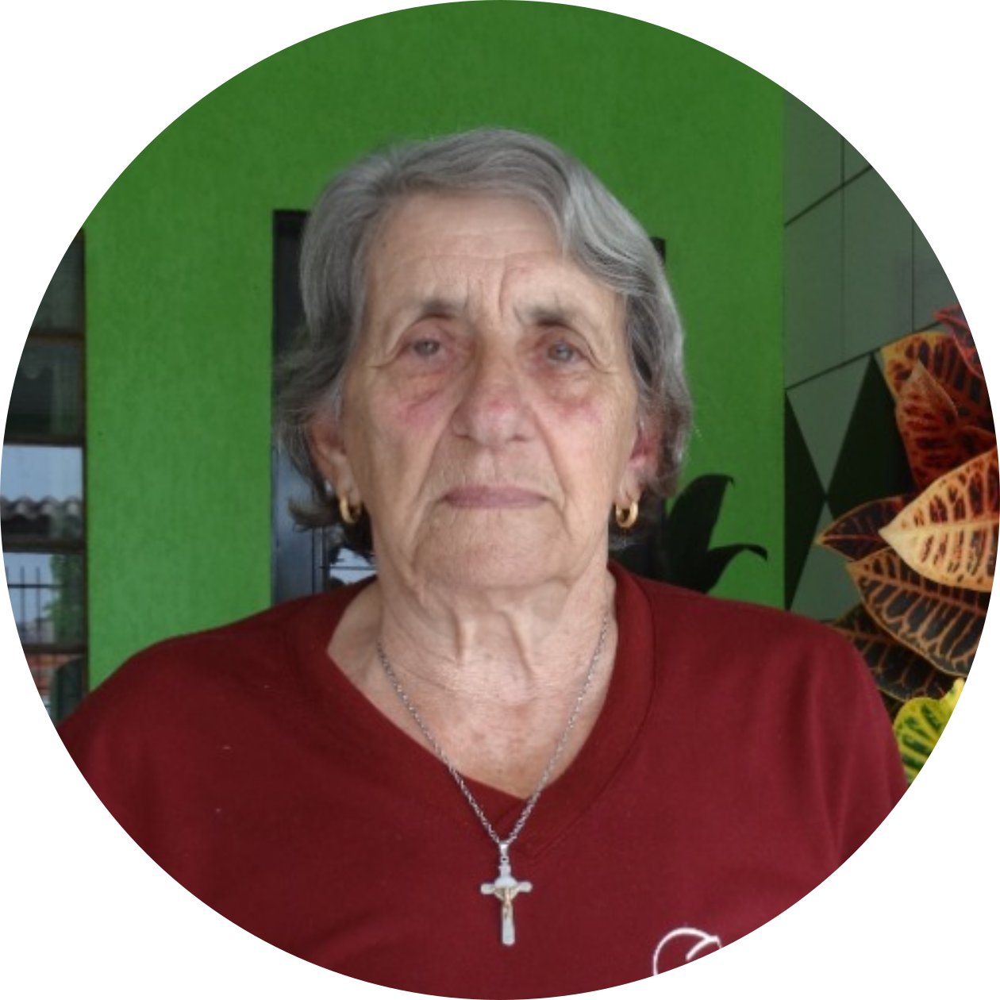
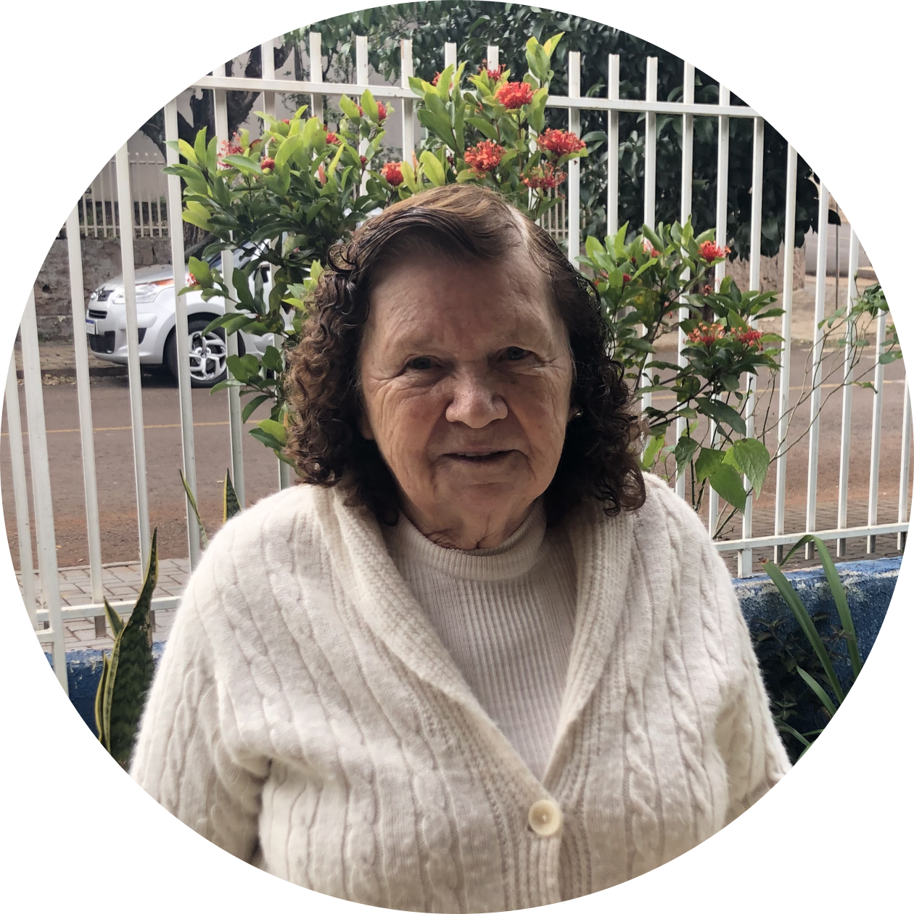

<!DOCTYPE html>
<html lang="pt-br">

<head>
    <meta charset="utf-8">
    <meta name="viewport" content="width=device-width, initial-scale=1">


    <link rel="stylesheet" href="./map.css" />
    <link rel="stylesheet" href="https://unpkg.com/leaflet@1.8.0/dist/leaflet.css"
        integrity="sha512-hoalWLoI8r4UszCkZ5kL8vayOGVae1oxXe/2A4AO6J9+580uKHDO3JdHb7NzwwzK5xr/Fs0W40kiNHxM9vyTtQ=="
        crossorigin="" />
    <script src="https://unpkg.com/leaflet@1.8.0/dist/leaflet.js"
        integrity="sha512-BB3hKbKWOc9Ez/TAwyWxNXeoV9c1v6FIeYiBieIWkpLjauysF18NzgR1MBNBXf8/KABdlkX68nAhlwcDFLGPCQ=="
        crossorigin=""></script>

    <script src="./dv.js"></script>
    <style type="text/css">
        html {
            overflow: hidden;
        }
    </style>
    <style>
        html,
        body {
            height: 100%;
            margin: 0;
        }

        .leaflet-container {
            height: 100%;
            width: 100%;
            /* max-width: 100%; */
            /* max-height: 100%; */
        }
    </style>


</head>

<body>


    <div id="map" style="width: 100%; height: 100%;"></div>

    <script>

        var corner1 = L.latLng(-26.25, -53.556944444444), corner2 = L.latLng(-25.25, -52.556944444444), bounds = L.latLngBounds(corner1, corner2);

        var map = L.map('map', { maxBounds: bounds, minZoom: 10.5, wheelPxPerZoomLevel: 100000, zoomControl: false }).setView([-25.75, -53.056944444444], 12);

        var tiles = L.tileLayer('https://api.mapbox.com/styles/v1/{id}/tiles/{z}/{x}/{y}?access_token=pk.eyJ1IjoibWFwYm94IiwiYSI6ImNpejY4NXVycTA2emYycXBndHRqcmZ3N3gifQ.rJcFIG214AriISLbB6B5aw', {
            maxZoom: 18,
            attribution: 'Map data &copy; <a href="https://www.openstreetmap.org/copyright">OpenStreetMap</a> contributors, ' +
                'Imagery © <a href="https://www.mapbox.com/">Mapbox</a>',
            id: 'mapbox/streets-v11',
            tileSize: 512,
            zoomOffset: -1
        }).addTo(map);

        var zoom = L.control.zoom({ "position": 'topright' }).addTo(map);


        var city = L.geoJSON(dv, { "style": { "fillOpacity": 0 } }).addTo(map);

        var Genoveva = L.marker([-25.757614, -53.050725]).addTo(map)
            .bindPopup('<b>Genoveva Joana Perin</b><br />Informações da benzedeira 1.');

        var Elza = L.marker([-25.729627, -53.072821]).addTo(map)
            .bindPopup('<div class="name"><b>Elza Margarida Bombarda Ricci</b><br /></div>\
                   <div class="row", style="width: 600px">\
                   <div class="pic";">\
                       \
                   </div>\
                   <div class="text";"><p>\
                        Dona Elza reside há aproximadamente 70 anos no Paraná.\
                        Benze há 40 anos quando sua comadre  quis lhe ensinar a benzer de\
                        rizipela. Dona Elza nos relata que segundo sua comadre, só se pode\
                        repassar os conhecimentos do benzimentos para três pessoas ao\
                        todo.<br /><br /> Atualmente benze apenas para rizipela e reza o\
                        responso de Santo Antônio.<br /><br /> Dona Elza é mais procurada\
                        pelos familiares, já que não é conhecida como benzedeira na\
                        comunidade.<br /><br /> Já repassou seus conhecimentos tradicionais\
                        de cura para uma pessoa, e nos disse que só pode repassar para mais\
                        duas, ou seu benzimento perderia o efeito.</p></div></div>',
                { maxHeight: 300, minWidth: 635, maxWidth: 700 });

        var Nair = L.marker([-25.729792, -53.071775]).addTo(map)
            .bindPopup('<div class="name"><b>Nair Wagner</b><br /></div>\
            <p>Dona Nair reside há 62 anos em Dois Vizinhos.\
            Aprendeu a maior parte dos seus benzimentos aos 16 anos com a sua Avó que já tinha o dom.<br /><br />\
            Atualmente benze de amarelão (e faz as garrafadas), quebrante, pulgas, olho gordo, bicha, mãe do corpo,\
            piolho de galinha, mordida de qualquer bicho ou inseto.<br /><br />\
            Dona Nair benze crianças, adultos e idosos. A maioria das pessoas que a procuram são da cidade, mas atende\
            muita gente de fora pelo telefone.<br /><br />\
            Ainda não repassou seus conhecimentos tradicionais de cura, e acredita que quando ensina outra pessoa,\
            seu dom enfraquece. Nos disse entretanto que quando encontrar alguém que lhe peça e tenha a vontade de aprender, ela ensinará.</p>',
            { maxHeight: 300, minWidth: 635, maxWidth: 700 });
        
        var Silvalina = L.marker([-25.802002, -53.103876]).addTo(map)
            .bindPopup('<div class="name"><b>Silvalina Maia</b><br /></div>\
                   <div class="row", style="width: 600px">\
                   <div class="pic";">\
                       \
                   </div>\
                   <div class="text";"><p>\
                           Dona Silvalina, aprendeu a benzer com sua vizinha e sua mãe, que repassou o\
                           conhecimento que sua avó tinha. Tem quatros irmãos benzedores, e todos\
                           aprenderam ainda quando criança. Foi com os ensinamentos de sua avó que aprendeu\
                           a benzer berruga e nos disse “a gente tem aquele dom. Foi com a minha gente que\
                           eu apreendi”.<br /><br />\
                           Benze de susto; quebrante; praguinhas de horta e lavouras; das bichas; e também\
                           limpa ouvidos, ela nos contou: “muitos vão ao médico e não adianta e vem aqui e\
                           a gente limpa, faz 8 anos que eu faço isso.” As pessoas já vieram de Dois\
                           Vizinhos e Região atrás de seu dom.<br /><br />\
Sente-se feliz ao receber a notícia de que sua benza funcionou. Dona Silvana\
contou: “Gosto de benzer, deixo do meu serviço e faço com aquele amor”.<br /><br />\
Ao ser perguntada sobre a vontade de repassar esse dom adiante, ela nos\
respondeu: “Eu tento ensinar, mas não é todo mundo que acredita, que gosta de\
fazer. Era bom, a gente tá ficando numa idade, é bom que outro aprendesse”. Dona\
Silvalina tem um neto de 7 anos que já sabe benzer rendidura e contou que vai\
aprender a benzer como a avó.</p></div></div>',
                { maxHeight: 300, minWidth: 635, maxWidth: 700 });
        
        
        
        
          var dorvalina = L.marker([-25.847174, -53.104749]).addTo(map)
            .bindPopup('<div class="name"><b>Dorvalina Macagnan Da Silva</b><br /></div>\
                   <div class="row", style="width: 600px">\
                   <div class="pic";">\
                       \
                   </div>\
                   <div class="text";"><p>\
                    Dona Dorvalina mora na comunidade Santa Lúcia, interior de Dois Vizinhos/PR. Começou a apreender o ofício de benzer com sua mãe e continuou apreendendo sozinha.<br /><br />\
Benze de Ar; Impinge; Rendidura; Cobreiro; Quebrante; Bicha… e de outras benzeduras que não foram citadas na entrevista.<br /><br />\
Dona Dorvalina nunca anotou nenhum benzimento, tem tudo guardado na cabeça, e só usa orações nas benzas. Tem seis filhos, e ensinou apenas para uma filha o ofício de benzer. As pessoas vêm de Quedas do Iguaçu,\
da comunidade, de dois vizinhos e região atrás de seu dom.</p></div></div>',
                { maxHeight: 300, minWidth: 635, maxWidth: 700 });
      

        var Juvelina = L.marker([-25.730633, -53.070428]).addTo(map)
            .bindPopup('<b>Maria Juvelina Da Silva</b><br /><br /><iframe width="300" height="168.75" src="https://www.youtube.com/embed/cnE5pSJOKOU" title="YouTube video player" frameborder="0" allow="accelerometer; autoplay; clipboard-write; encrypted-media; gyroscope; picture-in-picture" allowfullscreen></iframe>', { "maxWidth": "1000px" });

        var Catarina = L.marker([-25.727921, -53.061422]).addTo(map)
            .bindPopup('<b>Catarina De Jesus Martins</b><br /><br /><iframe width="300" height="168.75" src="https://www.youtube.com/embed/S3JHWB1nr1I" title="YouTube video player" frameborder="0" allow="accelerometer; autoplay; clipboard-write; encrypted-media; gyroscope; picture-in-picture" allowfullscreen></iframe>', { "maxWidth": "1000px" });


        var MariaFer = L.marker([-25.759721, -53.05838]).addTo(map)
            .bindPopup('<b>Maria Helena Fernandes Costa</b><br /><br /><iframe width="300" height="168.75" src="https://www.youtube.com/embed/jmetupRBQXY" title="YouTube video player" frameborder="0" allow="accelerometer; autoplay; clipboard-write; encrypted-media; gyroscope; picture-in-picture" allowfullscreen></iframe>', { "maxWidth": "1000px" });

        var Juraci = L.marker([-25.740403, -53.057698]).addTo(map)
            .bindPopup('<b>Juraci Zorzan</b><br /><br /><iframe width="300" height="168.75" src="https://www.youtube.com/embed/O-EApKwsCXA" title="YouTube video player" frameborder="0" allow="accelerometer; autoplay; clipboard-write; encrypted-media; gyroscope; picture-in-picture" allowfullscreen></iframe>', { "maxWidth": "1000px" });

        var Terezinha = L.marker([-25.755165, -53.071475]).addTo(map)
            .bindPopup('<div class="name"><b>Terezinha Foiatto Bachi</b><br /></div>\
                   <div class="row", style="width: 600px">\
                   <div class="pic";">\
                       \
                   </div>\
                   <div class="text";"><p>\
                       Dona Terezinha reside há aproximadamente 60 anos no\
                       Paraná. Prática o benzimento desde seus 17 anos de idade,\
                       quando seu pai que também benzia quis que ela aprendesse.\
                       Seu pai tinha aprendido com o avô de Dona Terezinha,\
                       tornando este conhecimento como herança de família.<br /><br />\
                       Atualmente benze para cobreiro, zipela e faz simpatia para bichas.<br /><br />\
                       \
                       Dona Terezinha é mais procurada pela comunidade local, mas por vezes também é\
                       procurada por pessoas do interior. Benze principalmente mulheres, crianças e\
                       jovens de cobreiro. Faz simpatia para bichas em crianças e homens em comparação\
                       a procuram bem pouco.<br /><br />\
                       \
                       Está repassando seus conhecimentos tradicionais de cura para uma de suas filhas,\
                       para que esse conhecimento não se perca.</p></div></div>',
                { maxHeight: 300, minWidth: 635, maxWidth: 700 });

        var Oracildo = L.marker([-25.750623, -53.064017]).addTo(map)
            .bindPopup('<b>Oracildo Vieira</b><br /><br /><iframe width="300" height="168.75" src="https://www.youtube.com/embed/JDT1NFGZ_LI" title="YouTube video player" frameborder="0" allow="accelerometer; autoplay; clipboard-write; encrypted-media; gyroscope; picture-in-picture" allowfullscreen></iframe>', { "maxWidth": "1000px" });


        var Marizete = L.marker([-25.758054, -53.059544]).addTo(map)
            .bindPopup('<b>Marizete Perin</b><br />Informações da benzedeira 3.');
        
        var Isa = L.marker([-25.801456, -53.105232]).addTo(map)
            .bindPopup('<b>Graciosa Isabel Chiodelli</b><br /><br /><iframe width="300" height="168.75" src="https://www.youtube.com/embed/Db2ikOoqHzw" title="YouTube video player" frameborder="0" allow="accelerometer; autoplay; clipboard-write; encrypted-media; gyroscope; picture-in-picture" allowfullscreen></iframe>', { "maxWidth": "1000px" });
        
         var Josefa = L.marker([-25.741253, -53.053562]).addTo(map)
            .bindPopup('<b>Josefa Gerwinski</b><br />Informações da benzedeira 1.');
                   <div class="row", style="width: 600px">\
                   <div class="pic";">\
                       \
        

        var popup = L.popup();

        function onMapClick(e) {
            popup
                .setLatLng(e.latlng)
                .setContent(e.latlng.toString())
                .openOn(map);
        }

        map.on('click', onMapClick);

    </script>
</body>

</html>
